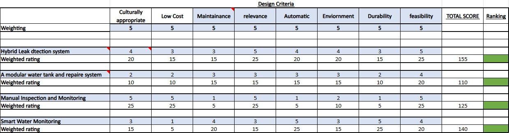

Design Criteria and Selection
Design Criteria
The following design criteria are used for system evaluation and screening of alternative solutions. The weights are all set to 5 to ensure the objectives and fair of the evaluation process.
1. Culturally Appropriate
The solution must be linked with the cultural values, governance structure and local customs of Lama Lama Country, including coordination with the decision-making mechanism of the YAC, and respect the leading position of the elder group in community affairs (Lama Lama Aboriginal Corporation, n.d.).
2. Low Cost
The initial installation cost and the long-term operation and maintenance costs of the solution must be within the community's affordability range. Priority should be given to reusing existing infrastructure such as FarmBot sensors and Starlink connections to reduce repetitive investment (EWB Australia, n.d.). The transportation and logistics costs in remote areas are high, and the selection of components should fully consider the convenience of procurement.
3. Maintenance
The solution must be capable of being maintained and simply repaired on a daily basis by Rangers and local residents without the assistance of external experts. The tools and spare parts required should be of common specifications. This standard directly responds to the core requirement of the EWB design brief of "maintenance priority and minimum complexity" (EWB Australia, n.d.).
4. Relevance
The solution must directly address the core issue of pipeline leakage. It can effectively reduce water resource loss and improve the reliability of the water supply during the dry season.
5. Automatic
The solution needs to be capable of proactively identifying leaks or abnormal conditions without human checking and minimising the routine inspection burden on Rangers as much as possible (Romero-Ben et al., 2023; Team, 2026).
6. Environment
The solution must be able to withstand the extreme seasonal climate of Port Stewart, including conditions such as flooding during the rainy season, road closures, and high temperatures and dryness during the dry season (EWB Australia, n.d.).
7. Durability
The equipment and components must be capable of long-term stable operation in remote environments, reducing the additional costs and logistics pressure caused by component replacement.
8. Feasibility
The solution must be practically feasible within the constraints of existing resources, technical conditions and community capabilities.
Design Solution Options
Here, three independent design proposals for addressing water leakage issues in Lama Lama Country will be presented. Each proposal takes a different technical approach and all have taken into account the remote and seasonal special environment of Lama Lama Country.
1. Hybrid Leak Detection System
This solution combines automatic sensing technology with manual community inspections. Key infrastructure is continuously monitored using EM500-PP pressure sensors and data is sent back via Starlink. It is an expansion based on the existing FarmBot system, achieving a balance between technical efficiency and local maintainability.
2. Modular Water Tank and Repair System
This plan improves the system's redundancy by deploying standardised modular water tank components and prefabricated pipeline repair kits, ensuring communities can quickly switch to backup water storage units and complete repairs independently when pipeline leaks occur. The components are of universal specifications and do not require specialised tools, facilitating local installation and replacement. However, this plan focuses on emergency repairs after leaks occur and lacks proactive early warning capabilities, limiting its contribution to water resource protection during dry seasons.
3. Manual Inspection and Monitoring
This scheme involves systematic visual inspections and pressure gauge readings of the main pipelines, water towers and various water usage points by Rangers on a regular basis as per a standardised checklist. It does not require any electronic devices, has an extremely low initial cost and is highly culturally appropriate. However, it cannot maintain the inspection frequency at night and during the rainy season, and the response time for leakage detection is relatively long. It has the lowest level of automation.
4. Smart Water Monitoring
This option uses a more advanced digital water monitoring system with higher levels of automation and durability. It can provide strong real-time monitoring and reduce manual checking. However, the system has a high capital cost and may require ongoing specialist support, which makes it less suitable for a remote community with limited technical resources.
Design Selection
A weighted decision matrix was used to evaluate the four design options against eight design criteria: cultural appropriateness, low cost, maintenance, relevance, automation, environment, durability, and feasibility. This selection process represents the screening stage of the design process, where the group compared possible solutions and selected the most suitable option for further development. Each criterion was weighted equally at 5, because all of these factors are important in the Lama Lama context. The final design needs to be affordable, locally manageable, culturally appropriate, technically useful, and suitable for a remote environment with limited specialist labour. Each option was rated on a 1–5 scale, where 1 = poor and 5 = excellent, giving a maximum possible score of 200.

The Hybrid Leak Detection System scored highest at 155 points and was selected for further development. It received the maximum rating of 5 for both relevance and feasibility. The relevance score is high because this option directly addresses the main project problem: detecting leaks earlier and reducing water loss in the existing water system. The feasibility score is also high because the system does not require the whole water infrastructure to be replaced. Instead, it builds on existing monitoring and communication systems, making it more realistic for Lama Lama Country.
The hybrid system also scored 4 for cultural appropriateness, automation, and environment. These scores show that the design provides useful technology while still keeping Rangers and local decision-making at the centre of the response process. The system does not replace community involvement or make decisions for the community. Instead, it detects abnormal signs, shows clearer information, and helps Rangers decide where to inspect first. This makes the solution more suitable for a community-led water management approach.
Although the hybrid option only scored 3 for low cost, maintenance, and durability, these scores are still acceptable because the system balances cost with reliability. It is more expensive than simple manual inspection, but it provides earlier warning of leaks and better support during wet-season access restrictions. It may also require some maintenance, but the system is divided into simple levels so that not every area depends on complex technology. This makes it more practical than a fully automated smart water system.
The three-tier structure is a key reason why the hybrid system scored strongly overall. Tier 1 uses continuous monitoring for critical infrastructure, such as the main tank, diesel pump line, and 80 mm HDPE pipeline. These areas are the most important because leaks or failures here can affect the whole water supply. Tier 2 uses simple visual checks for community-use areas, which reduces cost and makes inspection easier for Rangers. Tier 3 uses remote monitoring for disconnected sites, helping the community identify problems even when access is difficult. This structure avoids both over-design and under-design because each area receives a level of technology that matches its importance and risk.
Smart Water Monitoring ranked second with 140 points. It scored highly for automation and durability, both receiving 5. This means it would be technically strong and reliable for collecting data. However, it scored only 1 for low cost, which is a major weakness in this project context. A full smart water monitoring system would likely require higher setup costs, more equipment, and more specialist support. For a remote community such as Lama Lama Country, this could create a long-term financial and maintenance burden. Therefore, although it performed well technically, it was not the most suitable option overall.
Manual Inspection and Monitoring ranked third with 125 points. It scored 5 for cultural appropriateness, low cost, relevance, and feasibility because it is simple, affordable, and easy for Rangers to carry out. However, it scored only 1 for maintenance and automation, and 2 for environment. These low scores show that manual inspection alone is not reliable enough. If flooding or road closures limit physical access, Rangers may not be able to inspect the pipeline in time. This means leaks could remain undetected for longer periods, especially during the season when water reliability is most important.
The Modular Water Tank and Repair System ranked lowest with 110 points. Although it scored 4 for feasibility, it performed weaker in relevance, durability, low cost, and cultural appropriateness. Its main weakness is that it focuses more on repair and storage support rather than early leak detection. Since the project problem is mainly about identifying and reducing water loss from leaks, this option does not respond to the core issue as directly as the hybrid system.
Overall, the decision matrix shows that the Hybrid Leak Detection System provides the strongest balance across all eight criteria. It is more reliable than manual inspection, more affordable and locally manageable than full smart monitoring, and more relevant than the modular repair system. Therefore, it was selected as the final design solution and is developed in detail in the following section.
Detailed Design
The proposed design is a Hybrid Water Leak Detection System for Lama Lama Country. It is designed to detect abnormal water loss, show simple alerts, and guide Rangers to inspect the correct location. The system does not replace the existing water infrastructure. Instead, it adds monitoring and response support to help reduce water loss from leaks.
The system follows a simple principle:
Sensors detect the problem, and Rangers verify and respond.
This approach is suitable because Lama Lama Country is remote, and repairs may be delayed by seasonal flooding or limited access. A fully automated system may be too complex to maintain, while a fully manual system may not detect leaks early enough. The hybrid approach balances technology with local knowledge and practical maintenance.
Main System Structure
The system is divided into three monitoring tiers.
Tier 1: Critical Infrastructure Monitoring
Tier 1 focuses on the most important parts of the water system. This includes the 250,000 L Aqualine tank, the diesel pump line, and the 80 mm HDPE pipeline. These areas are important because failure or leakage here can affect the whole water supply.
Pressure sensors are placed at key points along the pipeline, such as the tank outlet, midline, and end-of-line. The existing FarmBot tank-level sensor can also be reused to monitor storage levels. If the tank level drops faster than expected or pipeline pressure falls below the normal range, the system can identify a possible leak.
Pressure sensors are suitable because they are cheaper, easier to install, and more sensitive to leaks than flow sensors in this context. Tank-level sensors help track storage changes and identify unusual water loss over time.
Tier 2: Community-Use Area Monitoring
Tier 2 covers community-use areas such as the Community Centre and local facilities. These areas do not need a complex sensor system. Instead, the design uses simple visual flow indicators, such as inline sight glasses or mechanical flow meters, combined with weekly Ranger walk-through inspections.
This low-technology approach reduces cost and maintenance burden. It also supports local ownership because Rangers and community members can visually check the system without needing specialist tools.
Tier 3: Remote Site Monitoring
Tier 3 covers remote or disconnected sites such as Upper Camp, Lower Camp, and Running Creek. These locations may be harder to access, especially during the wet season. For these areas, the system uses solar-powered tank-level sensors and LoRaWAN or satellite reporting.
The purpose of Tier 3 is to allow remote monitoring when physical inspections are difficult. If a remote tank level becomes too low or pressure data shows abnormal change, the dashboard can show which site needs checking. This helps Rangers prioritise inspections instead of travelling to every location unnecessarily.